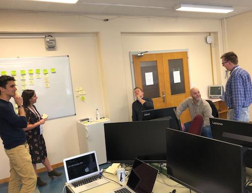

Dryad & Zenodo: Our Path Ahead
by
 Alex Ioannidis,
on March 10, 2020
Alex Ioannidis,
on March 10, 2020
In July, 2019 we were proud to announce a funded partnership between Dryad and Zenodo. Today, we are excited to give an update on our future together.
Dryad and Zenodo have both been leading the way in open-source data, software, and other research outputs publishing for the last decade. While our focus and adoption mechanisms may have been different, we’ve had similar values and goals all along: publish and archive non-traditional research outputs in an open and accessible way that promotes best practices.
In looking to expand our capacities for sharing data and software, it became clear that we could each benefit from the other’s expertise. Dryad has long focused on research data, curating each dataset published, and working in close coordination with publishers and societies to support journal data policies. Zenodo, based at CERN, builds on strong infrastructure capacity and has focused on software publishing and citation. It was clear that by working together, leveraging each other's expertise, we could better achieve our goals. Notably, we believe researchers should have an opportunity to publish curated data, software, and other research outputs at a trusted, open source set of repositories in a seamless way.
At the beginning of February, we brought our two teams together to understand the repository systems, roadmaps, and to map our work ahead. We have broken down this work into a couple of segments and will be beginning with our first project, as noted on our Github, as “DJ D-Zed: Mixing Up Repositories”. In other words, we will be integrating our two systems to lower the barrier for researchers who want to follow best practices publishing their software, data, and supporting information. The first direction of focus is publishing from Dryad to Zenodo.

So, what does it all look like?
This project entails re-imagining the Dryad upload interface to expand the scope of upload to accommodate researchers uploading more than data. Within this interface, through a series of declarations and machine reading, we will triage data, software, and supporting (other) files. Data should be curated and published at Dryad. Software requires a series of different license options, metadata, and other attributes and supporting files benefit from a previewer, so these files are more appropriately published at Zenodo.
After curation, once the items are ready to be published, it is essential that we can link up the work with their DOIs and citations to both. As Dryad and Zenodo each mint DOIs for published works, it is our responsibility to expose the relationship between the software, data, and other citations so users can find all related work. The benefit of having separate citations for software and data will allow for more specified citation practices at journals, in preprints, etc.

It is essential that we acknowledge the importance of user testing. We have identified our minimum viable product, but the look and feel of this relies on close collaboration with our user experience teams and researcher user testing. This integration can only succeed if researchers find the benefits of using one entry point for two repositories, and are educated along the way about best practices for data and software. We’ll be planning opportunities for feedback at specific milestones, and appreciate comments via email or github comments along the way.
What happens next
Our partnership relies on cross-organization co-development. Our teams have been spending time to understand how Dryad and Zenodo both function to ensure we are building for success for each of our user communities. Our initial user testing is about to ramp up, and we have begun the exploration into backend development to tie our systems closer together. As avid open-source supporters, all of our work will be tracked publicly on Github. Our code and documentation will also be available as new features are released.
User testing our workflows with researchers will help guide our development, but we also need to understand how this work can support Dryad and Zenodo’s larger communities: institutions, libraries, publishers, societies, funding agencies, and others that have a stake in research data and software publishing. We will have regular opportunities for feedback and we hope you will weigh in.
Check out our blogs for updates as well as our Twitter to hear about upcoming meetings we will be presenting at. And If you have feedback please as always get in touch with our Product Managers at Dryad and Zenodo.
Funded Partnership Brings Dryad and Zenodo Closer
by
 Lars Holm Nielsen,
on July 17, 2019
Lars Holm Nielsen,
on July 17, 2019
Cross posted at Dryad
With increasing mandates and initiatives around open data and software, researchers commonly have to make a choice about where to deposit their non-article outputs. Unfortunately, systems that are built to accommodate these objects work separately and can make the process more difficult. As a result, data, code, figures, and other outputs go to a variety of disconnected places, or improper homes (i.e. code with the wrong license or data not curated). To tackle this issue, and make open research best practices more seamless for researchers, we are thrilled to announce a partnership between Dryad and Zenodo.

Dryad is a leader in data curation and data publishing. For the last ten years, Dryad has focused primarily on research data, supporting a CC0 license and manually curating each incoming dataset. Zenodo, a general use repository hosted at CERN, has been paving the way in software citation and publishing. As long time players in the open science movement, we believe that we can advance open science and open-source projects further by working together. Instead of working individually to broaden each our scopes, building competitive features, and inefficiently using our limited resources, Dryad and Zenodo will be working together to support more seamless workflows that make the process easier for researchers.
To jumpstart this collaboration, we are proud to have been awarded an Alfred P. Sloan Foundation grant that will enable us to co-develop new solutions focused on supporting researcher and publisher workflows as well as best practices in data and software curation. By focusing on integrations between our systems, leveraging data and software expertise, we can both extend the reach of our services and open up more opportunities for broader research communities. We are looking forward to re-imagining the submission process for researchers and how we can better support our journal publishing and institutional communities along the way.
Our leadership teams are dedicated to the future of our co-development projects:
"Dryad has long admired the work Zenodo does in our shared space and we are thrilled to finally find a way to collaborate on a project that benefits researchers around the globe. The Dryad-Zenodo integration is an excellent example of how two like-minded organizations can join together in a shared vision", says Melissanne Scheld, Executive Director at Dryad.
"Dryad and Zenodo have always shared the same Open Science values, this is why we are very excited to partner up with such a talented team and bring the future of scientific publication one step closer to reality. We look forward to this inspiring collaboration with Dryad as well as helping the research community to move science forward, says Jose Benito Gonzalez, Head of Digital Repositories at CERN/Zenodo.
As we embark on this open-source project and partnership together, we invite community feedback and input.
Roadmap update
by
 Lars Holm Nielsen,
on July 16, 2019
Lars Holm Nielsen,
on July 16, 2019
Today, we have updated our public roadmap. Over the summer we have reduced development capacity as staff is on holidays, and thus we're focusing on minor improvements:
- Citations: We're improving the regular updates of citation data from our data sources such as NASA ADS, OpenAIRE, CrossRef and EuropePMC.
- GitHub improvements: We're making some minor optimizations in the release processing workflows.
- Infrastructure: We're growing rapidly, and thus we're in need of upgrading our Elasticsearch cluster.
Our biggest target right now is the preparations for importing a dataset of 300.000 biodiversity treatments records into Zenodo in collaboration with Plazi and Pensoft. We hope to be able to present this work around end-October. These improvements will bring support for geospatioal, temporal and method metadata to Zenodo.